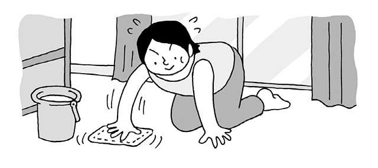
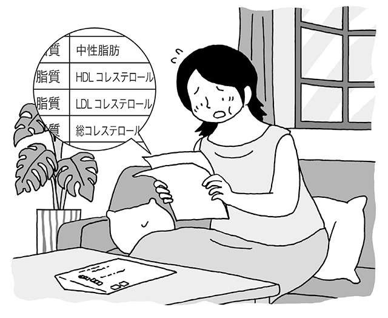
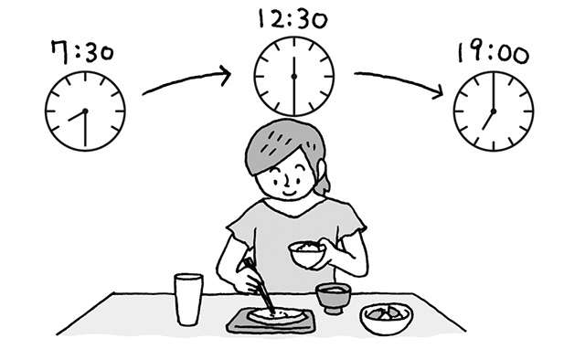
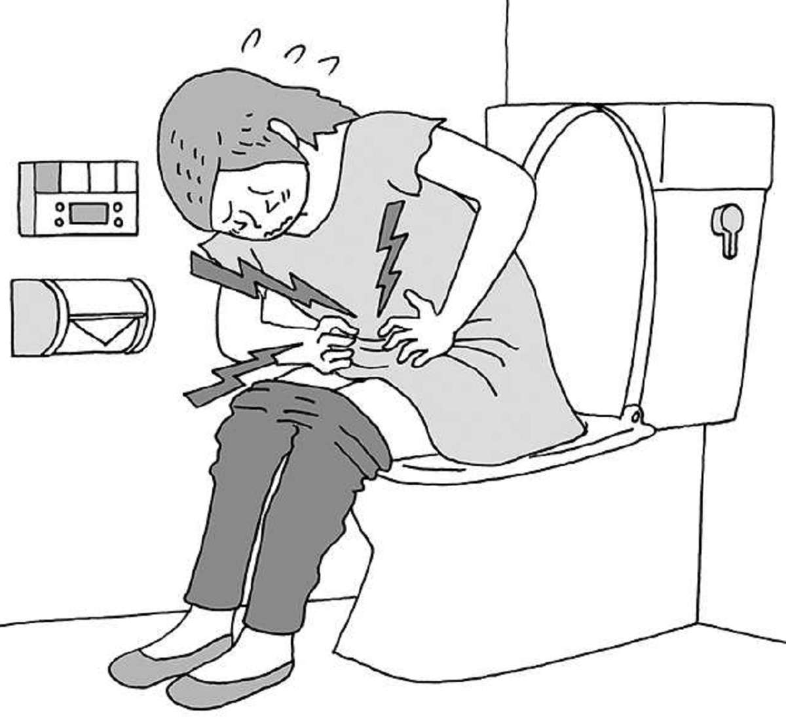
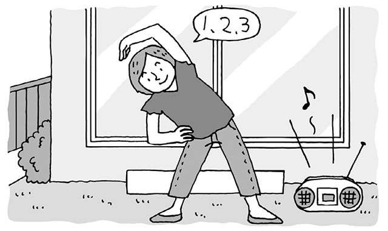
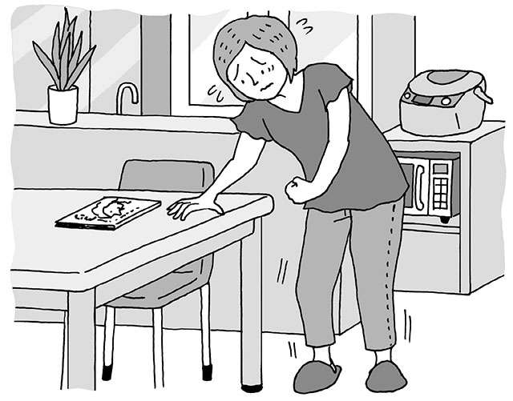
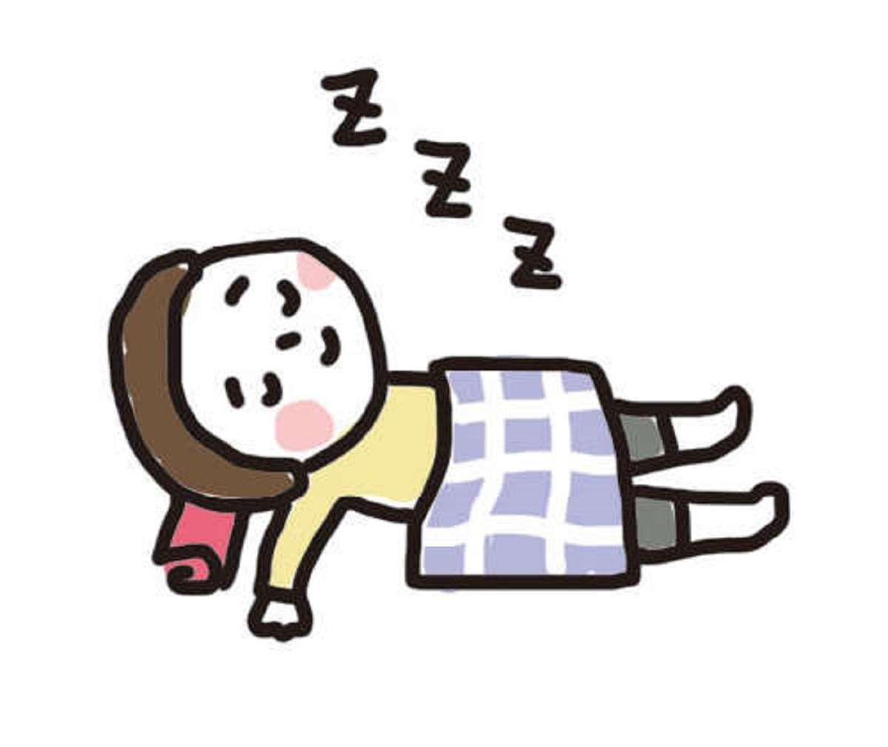
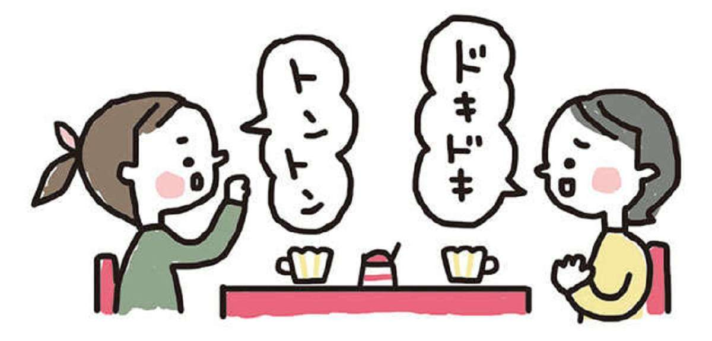

关键词为“生活方式”的文章
1-

低压扰乱自主神经，浑身不舒服…… 发布日期：如果您担心胆固醇或甘油三酯。预防和改善血脂异常的生活习惯...
-

低压扰乱自主神经，浑身不舒服…… 发布日期：更年期后要小心！自查“血脂”增加脑梗塞风险...
-

低压扰乱自主神经，浑身不舒服…… 发布日期：腹痛、腹泻、便秘……预防和改善肠易激综合症的生活习惯……
-

低压扰乱自主神经，浑身不舒服…… 发布日期：日本1200万患者！肠易激综合症，会导致腹泻和便秘......
-

低压扰乱自主神经，浑身不舒服…… 发布日期：65 岁及以上的老人中，每 100 人中就有 1 人受到影响！我们向神经内科的波多野博士询问有关帕金的问题...
-

低压扰乱自主神经，浑身不舒服…… 发布日期：我们从神经科医生波多野博士那里了解到帕金森病，这种疾病的发病率从 60 年代末开始增加......
-

低压扰乱自主神经，浑身不舒服…… 发布日期：让你的大脑恢复活力！脑科学家西刚 (Tsuyoshi Nishi) 提供了有关如何锻炼和睡眠对大脑有益的简单易懂的说明……
-
低压扰乱自主神经，浑身不舒服…… 发布日期：
低胆固醇会导致认知功能下降吗？神经科学家西刚 (Tsuyoshi Nishi) 访谈...
-
低压扰乱自主神经，浑身不舒服…… 发布日期：
这种兴奋很有效！降低痴呆风险的爱好[神经科学家西刚访谈]
-

低压扰乱自主神经，浑身不舒服…… 发布日期：“不努力工作的大脑活动习惯”可降低大脑衰老的风险[脑科学家西刚...
-
低压扰乱自主神经，浑身不舒服…… 发布日期：
我们向神经科学家西先生询问了易于融入日常生活的大脑健康生活方式......
-
低压扰乱自主神经，浑身不舒服…… 发布日期：
著名植物神经医师小林博之医生的指导！ “看照片可以消除焦虑和压力......